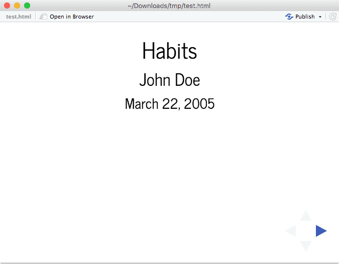
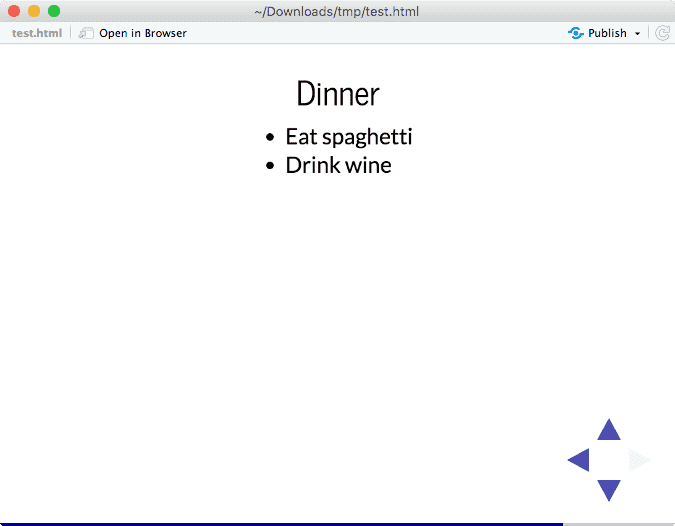
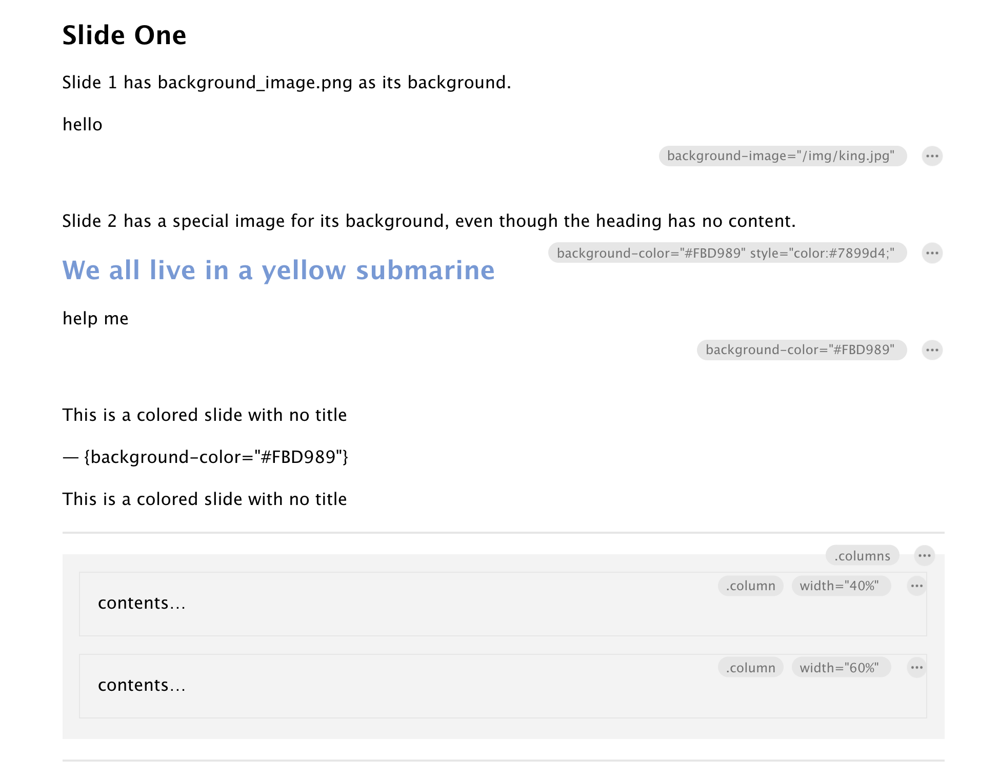

Revealing research
A case study with reveal.js slides
By Alison Hill in rmarkdown
July 22, 2021
Background
Lately, one of the most exciting things you can say to me (at work) is
“Why aren’t people using X? What are the problems with X, and how can we fix them?”.
Sometimes, I know these answers already by heart, because I have lived and breathed X. This is how blogdown was for me - I felt very tuned in to the usability problems there, and had good ideas for how to resolve them.
Other times, I have not used X (yet!). This happened to me recently when I was asked:
“Why aren’t people using reveal.js for slides with R Markdown? What are the problems with reveal.js, and how can we fix them?”.
What is reveal.js? Here is a demo deck:
It’s possible you’ve heard or seen reveal.js before - and it didn’t look this good! It may have looked more like this:

Figure 1: Two sample slides created from the revealjs package.
This…never quite worked for me. If you know my work, you know I’m a pretty big fan of the xaringan package by Yihui Xie for making HTML-based slides with R Markdown. That package wraps a third-party JavaScript library called remark.js and lets you use that to knit R code and its output into your remark.js slides. I’ve used xaringan for years, and have taught it quite a lot too. It helps me make slides like this:
I love it, but also recognize that it is hard, and that it is not intended for beginners (hence the “ninja” references in the package name and supporting documentation).
Which is too bad, because I think HTML-based slides are a great way for beginners to get started using R Markdown.
So here we are! Why aren’t people using reveal.js? I set out to find out, and thought this was a great example of one of the things I love most about being a Product Manager. Since I am not a current user, but would conceivably be a target user, I get to play the part of the “wide-eyed doe in the woods” - eager to learn but also a little cautious - will reveal.js cause me pain? It is likely
Plus, since it has been almost 6 months since my last blog post, I thought I would turn this early research project into a blog post to give a glimpse of some of the daily work I do as the Product Manager for Data Science Communication at RStudio.
Goal
Understand how users experience using reveal.js to make slides, and identify areas for improvement.
The competition
The landscape of HTML slide-making is unfortunately pretty big, but it’s important to sketch it out. There are lots of frameworks, largely based off of different JavaScript tools. I see almost a new one a month! If you just look at Pandoc alone, it supports five different frameworks:
Remark.js is another popular one, as I mentioned earlier. There is also Webslides. And Slidev. And Shower. And Marp. And more I’m sure! (In fact, here is a gist with more.)
The rmarkdown package also supports ioslides as an output format.
Why reveal.js?
So starting simple: why do we think R Markdown users could benefit from using reveal.js?
-
Pandoc slide syntax
-
Powered by slides.com for publishing/sharing- so well supported (that is paid though)
-
Good docs: https://revealjs.com/
-
Extensive plug-ins are available to extend: https://revealjs.com/plugins/
-
We have an existing package ( https://github.com/rstudio/revealjs) (albeit a little out-of-date)
-
Built in themes: https://revealjs.com/themes/
-
It is also a supported slideshow framework for Jupyter/IPython via RISE
-
Custom themes are possible (but perhaps not easy) using SASS layers: https://github.com/hakimel/reveal.js/blob/master/css/theme/README.md
Research questions
Given all these pluses, and the competition, what do we want to know/
[Functionality]How, if at all, do users expect to use reveal.js? What problems does it solve for them, and what are unaddressed problems?[Ease of use]Where, if at all, do users express uncertainty, frustration, or confusion? What API problems arise?[Task success]What kinds of messages, warnings, or errors do users encounter when using reveal.js? Where, if at all, do they get stuck or confused? What, if any, strategies or resources do they find for troubleshooting?
Method
With these goals in mind, I wanted to start with just a few days of work, because I couldn’t tell how big of a project this was. So I didn’t want to do user interviews.
Instead, I relied on combing through community forums, blog posts, existing documentation, and GitHub issues to trace the outline of the problem space first. I actually got a lot of mileage from this exercise, even without direct user input.
Here were some of my primary research resources (GitHub issues I tracked inline with my notes below):
-
Blog posts:
-
Community thread:
-
Pandoc docs:
-
Our docs:
This kind of research is sort of akin to bushwhacking. There is no clear trail, and you are traveling in sort of wild country. There may be lots of noise in all these channels that actually isn’t accurate, so you have to trust your own intuition some and do your own testing even more.
I’ll note here that a red flag right off the bat for me is that we don’t even have revealjs tagged on RStudio Community, so we aren’t exactly advertising usage. Nevertheless, there are questions about it on there, which seem to largely go unanswered. I also didn’t find a lot of blog posts or meetup presentations on the topic. If you know the #rstats community, you know that sharing knowledge is basically baked in, so this tells you something is up (but it could be messaging - the tool may still be great!).
What works?
Before reading through many of the blog posts and community forum threads, I also actually just used the tool.
Here was my minimal demo deck:
I tried to follow the docs myself, and maintain a friction log of what worked well and what didn’t. If I stumbled, I tried to make a mental note to actually figure out why at some point. It could be an actual bug, or it could be that my mental model is wrong, or it could be that I trusted a doc or a user’s guide and that led me astray. Whatever it is, it’s important that I track what went wrong. Here is my scratchpad of what I tried that did work.
-
Multi-column layout (but, a bit clunky? Have to create container first. In xaringan, this is just
.pull-left[contents...]and.pull-right[contents...]):::: {.columns} ::: {.column width="40%"} contents… ::: ::: {.column width="60%"} contents… ::: :::: -
Tile view: escape kbd shortcut - very cool!
- Although why does tile view show all top aligned slides instead of centered?
-
Vertical slides: Aha you invoke vertical slides by using level 1 headers! (essentially, by adding sections). The “default” horizontal slide layout depends on using
##for all slide headers - a bit of a gotcha to folks so we’ll need to really document and teach this well- Pandoc’s docs on this: Note: in reveal.js slide shows, if slide level is 2, a two-dimensional layout will be produced, with level-1 headings building horizontally and level-2 headings building vertically. It is not recommended that you use deeper nesting of section levels with reveal.js.
- The option for vertical is actually nice- several customers have mentioned to me that they like it for making flexible presentations (i.e., if you have 5 min, you do just the horizontal, if you have 20 you know you can go down and use the vertical)
-
Speaker notes +
skbd shortcut for speaker view- nice, awesome::: notes This is my note. - It can contain Markdown - like this list ::: -
Hidden slides- nice, awesome
## {visibility="hidden"} -
Cool layout options: https://revealjs.com/layout/
-
Backgrounds for individual slides- images, transitions, all per slide, all work great (but! see the
oofbelow regarding relative vs absolute image paths on GH pages)## CSS color bg {background=#ff0000} ## Full size image bg {background="background.jpeg"} ## Video bg {background-video="background.mp4"} ## A bg html page {background-iframe="https://example.com"}
What might work but I don’t know for sure?
-
This syntax should work to change a slide background using the three dashes as the slide separator instead of the level 2 markdown header, but does not:
--- {background-color="#FBD989"}[TODO]: test with updated Pandoc, file bug if still doesn't work
-
How do I change syntax highlighting themes using the built-in highlight.js? https://revealjs.com/code/#theming
-
NOTE: the R package we have has a YAML key for this
-
These are all very nice code chunk effects- how would I use with knitr chunks? https://revealjs.com/code/
-
Two column incremental?
[TODO:] test this
-
Want to see slide numbers out of total, but this does not work:
slideNumber: 'c/t'-
[TODO:] test with latest Pandoc and file issue there if can confirm bug with reprex
What needs to change?
-
Difficult to style out of the box (i.e., you are in CSS inspect element world).
-
“Creating themes seems to require you to fork reveal’s github repo for full generality, which feels a bit weird…Either way, in practice theming can be a rabbit hole of flex-box and responsive media queries.” - blog post
-
“Note - if you are an artist (or very focused on small visual details), then you might want to reconsider using reveal.js.” - blog post
-
-
Build in SASS/SCSS support
-
I made my own: https://github.com/apreshill/revealing-slides/blob/main/assets/my-style.scss
-
Then used the sass package to compile to css: https://github.com/apreshill/revealing-slides/blob/main/assets/compile-sass.R
-
Then used the css key in the YAML
-
-
The visual editor view is disorienting (hard to see where slides start/end):

-
Accessibility: slide tones on advance?
- See: https://pkg.garrickadenbuie.com/xaringanExtra/#/slide-tone
- https://stackoverflow.com/questions/32956342/with-reveal-js-how-can-i-make-slides-change-upon-completion-of-embedded-media
[TODO:] test out this plugin: <https://github.com/rajgoel/reveal.js-plugins/tree/master/audio-slideshow>
-
Adding a logo is hard, needs to be easier. See also:
-
Changing the overall alignment is hard, needs to be easier (all centered by default):
-
You can use
center: falsein the YAML, but this is only for vertical alignment
-
The default transitions look a bit dated…changing all to “none” looks more modern
-
[TODO:] change defaults?// Transition style transition: 'slide' --> 'none', // none/fade/slide/convex/concave/zoom // // Transition style for full page slide backgrounds backgroundTransition: 'fade' --> 'none', // none/fade/slide/convex/concave/zoom
-
-
Good + modern built-in themes- I have zero love for any of the existing themes
-
A good start for a style template: https://github.com/hakimel/reveal.js/blob/master/css/theme/template/settings.scss
-
[TODO:] Provide a set of built-in themes that data scientists would want to use
-
-
Customizing title slide- looks like it is YAML only? It would be nice to be able to opt for using straight up HTML in the first slide as the title slide. This is a Pandoc principle though across slide formats.
-
Build in shortcode for panelsets? I’m totally sold on panelsets for slide decks:
-
Easily use google fonts- maybe using YAML for fonts like bslib/sass package does (and does the dirty work for you to be able to work offline)
- See: https://rstudio.github.io/sass/reference/font_face.html
[TODO:] get bslib support for SASS/SCSS files in R package
-
Can we make PDF exporting easier, perhaps with pagedown? https://revealjs.com/pdf-export/
-
Can we have emoji support?
- Official answer is no: https://github.com/hakimel/reveal.js/issues/2517
-
A Pandoc bug? The
data-prefix is not required for other attributes, but in the YAML for the title slide they are required:title-slide-attributes: data-background-image: /img/pink-paint.jpg data-background-size: cover
Follow-up in the future
- Live revealjs theme editor (v v v old): https://github.com/byteclubfr/uncloak
- The menu plugin looks interesting: https://stackoverflow.com/a/61075371/9437012
- As does the spotlight plugin: https://github.com/denniskniep/reveal.js-plugin-spotlight
- Oof it looks like publishing ghpages from the project root misses files in subdirectories, note that none of my background images show up!
- Note to self: use relative urls to images rather than absolute (so don’t start with a slash if in subdirectory as the Pandoc docs led you to believe- that will generate absolute urls that GH Pages will trip on- Netlify did not)
My final answer
So the question I started with was:
“Why aren’t people using reveal.js for slides with R Markdown? What are the problems with reveal.js, and how can we fix them?”.
My answer? I think there are a few factors working against reveal.js. The most obvious is that there is a noticeable lack of community engagement around the format - so there is an enthusiasm gap there between reveal.js and R packages like xaringan. The sheer number of options for HTML-based slide output formats leads folks toward using the one they see and hear about in the wild. That often starts with brave sharers on social media like Twitter, which then trickles down into user blog posts, folks who can answer questions on community, and ultimately contributors who improve the open-source software themselves. There have been amazing community contributions around the xaringan ecosystem. Have you heard of: https://xaringan.club/ (brought to you by Garrick)?
“The first rule of xaringan club is…we talk about xaringan.”
Will there be a reveal.js club? I hope so! In my research, I found a lot of things to like working with reveal.js, and some things that I do think would serve R Markdown users and especially beginners well, perhaps even better than xaringan/remark.js. But, is there room for improvement? Always 😉
Honestly, with slide making tools, my own experience is that I’m less enthusiastic when I feel less empowered. I feel empowered as a user when a tool lets me customize the look and layout of my slides, with some guardrails to make sure I don’t enter the deep-dark CSS labyrinth. What I want is to fall into the “pit of beauty” more quickly, instead of the “pit of ugly” after hours of trying. See this interview with Hadley Wickham about the “pit of success” if you don’t get this reference! In my experience, this is what will drive some brave adopters to dip their toe into reveal.js, and ultimately what might help teams take the plunge together.
So what happens next? This was just the beginning, but it is where I’m at after a few days of research and testing. I know I’ll be using it for my next slide deck so stay tuned!